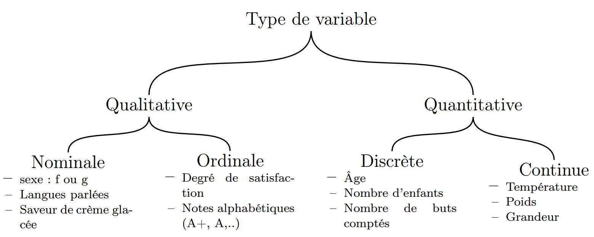

Probabilités et Statistiques¶
Les variables aléatoires¶
Les différents types de variable aléatoire (v.a.)¶
On distingue deux catégories de v.a. :
- Qualitatives: Variable portant sur des grandeurs non numériques
- Nominales : v.a. correspond à des noms sans ordre précis
- Ordinales : v.a. possédant un ordre
- Quantitatives : Variable portant sur des grandeurs numériques
- Discrètes : v.a. dont les valeurs sont énumérables
- Continues : v.a. dont les valeurs sont tellement nombreuses qu’elles en deviennent non-énumérable
Espérance (ou moyenne) \(\mathbb{E}(X)\)¶
C’est la valeur moyenne que prend un v.a.. On note généralement \(\mathbb{E}(X) = \overline{x}\).
- Pour une v.a. discrète : \(\mathbb{E}(X) = \sum_{i=1}^{+\inf}{x_i p_i}\)
- Pour une v.a. continue : \(\mathbb{E}(X) = \int_{-\inf}^{+\inf}{xf(x)}\)
Variance \(V(X)\)¶
Valeur indiquant la manière dont se disperse la série statistique autour de sa moyenne. Plus la variance est élevée, plus les valeurs de la série sont écartées les unes des autres.
- Pour une v.a. discrète : \(V(X) = \sum_{i=1}^{k}{(x_i-\overline{x}) p_i}\)
- Pour une v.a. continue : \(V(X) = \int{(x-\overline{x})^2f(x)dx}\)
Ecart type \(\sigma_X\)¶
Valeur indiquant la manière dont se disperse la série statistique autour de sa moyenne. Plus l’écart type est faible, plus les valeurs de la série sont regroupées autour de la moyenne. L’écart type est égal à la racine carré de la variance.
- Formule générale : \(\sigma_X=\sqrt{\mathbb{E}[(X-\mathbb{E}(X)]^2}=\sqrt{\mathbb{E}(X^2)-\mathbb{E}(X)^2}\)
- Pour une v.a. continue : \(\sigma_X=\sqrt{\sum_{i=1}^{k}{(x_i-\overline{x}) p_i}}\)
- Pour une v.a. discrète : \(\sigma_X=\sqrt{\int{(x-\overline{x})^2f(x)dx}}\)
Covariance \(\Cov(X,Y)\)¶
Entre plusieurs v.a., permet de quantifier leur écarts conjoints par rapport à leurs espérances respectives.
- Pour deux v.a. : \(\Cov(X,Y)=\mathbb{E}[(X-\overline{X})(Y-\overline{Y})]=\frac{1}{N}\sum_{i=1}^{N}{(X-\overline{X})(Y-\overline{Y})}\)
Pour généraliser à \(\color{red}N\) VA, on peut construire la matrice de covariance notée \(\Sigma\). Ici, on prend \(X_i\) comme étant la v.a. \(i\) avec \(i \in N\) :
Or, \(\Cov(X,X) = V(X)\), d’où :
Corrélation \(\Corr(X,Y)\)¶
Entre plusieurs v.a., permet de mesurer l’intensité de la relation pouvant exister entre elles.
- Pour deux v.a. : \(\Corr(X,Y)=\frac{\Cov(X,Y)}{\sigma_X \sigma_Y}\)
Pour généraliser à \(\color{red}N\) VA, on peut construire la matrice de corrélation notée \(r\). Ici, on prend \(X_i\) comme étant la v.a. \(i\) avec \(i \in N\) :
Or, \(\Corr(X,X) = 1\), d’où :
Homo/Hétéro - scédasticité¶
Pour chaque variable observée, leur variance est soit hétérogène, soit homogène.
TODO
Théorème de Bayes¶
Dans le cas binomial¶
- posterior = \(\P(A\given B)\) = probabilité à posteriori de A sachant B
- likelihood = \(\P(B \given A)\) = vraisemblance de A
- prior = \(\P(A)\) = probabilité à priori de A
- evidence = \(\P(B)\) = probabilité à priori de B